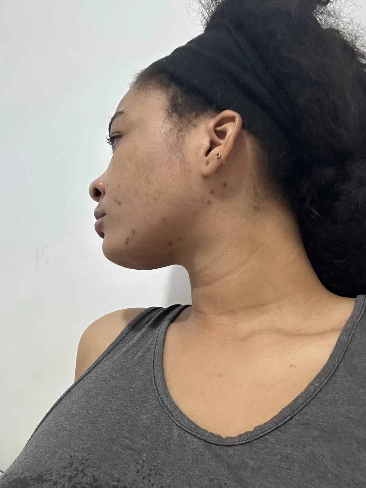
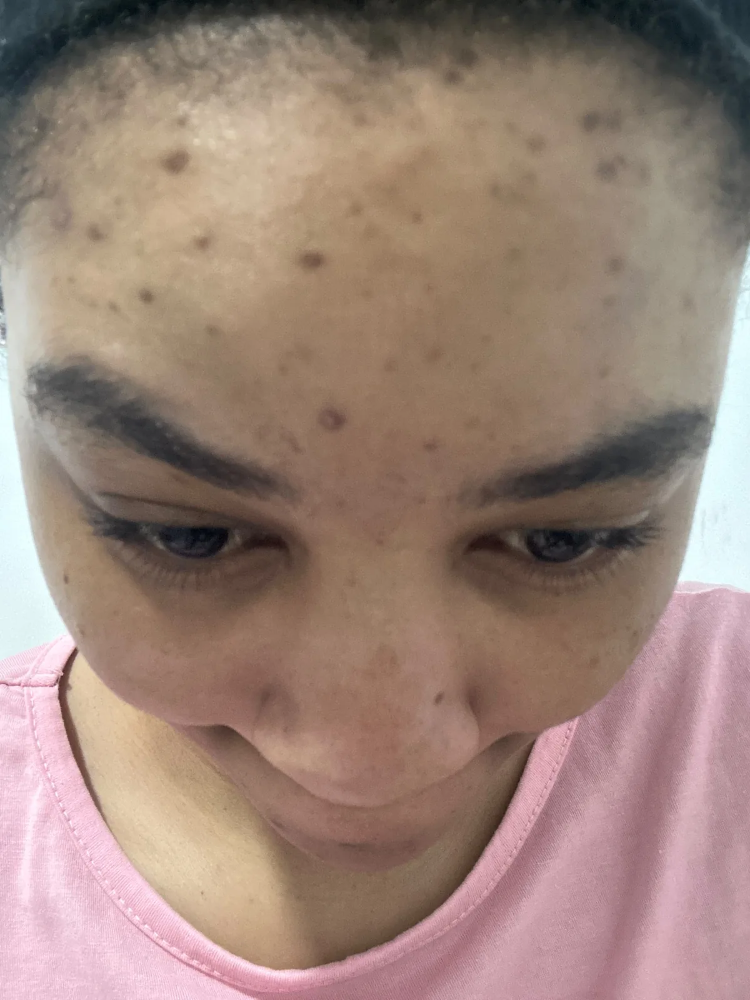

Étape 1
Savon noir réparateur
00,00 €Visage & corps · 250 g
Nettoie en profondeur et prépare la peau, sans la dessécher.
En stock Ajouter au panierLe savon noir purifie, le Glow Oil illumine. Une routine courte, des résultats que nous montrons sans filtre.
Deux soins pensés pour fonctionner ensemble, matin et soir.
Visage & corps · 250 g
Nettoie en profondeur et prépare la peau, sans la dessécher.
En stock Ajouter au panier
Huile corporelle · 100 ml
Nourrit, répare et laisse un fini lumineux. Seule ou en booster.
Stock limité Ajouter au panierSavon noir + Glow Oil, réunis.
Des photos et des vidéos réelles, prises au téléphone, à la lumière du jour.

Avant
AvantRésultats individuels, variables selon les peaux. Durée d'utilisation indiquée sous chaque témoignage.
Faites mousser le savon noir sur peau mouillée, massez, rincez.
Tamponnez doucement en laissant la peau légèrement humide.
Massez quelques gouttes de Glow Oil jusqu'à pénétration.
Passionnée de mode, de parfum et de soin, Flore a créé Floréa Skin avec une idée simple : une routine courte, suivie chaque jour, fait plus qu'une étagère pleine.
Deux soins, inspirés du savon noir traditionnel et des huiles de soin. Rien de plus.
Oui, il s'utilise sur le visage et le corps. Évitez le contour des yeux et faites un test sur une petite zone la première fois.
Chaque peau est différente. Comptez plusieurs semaines d'utilisation régulière, matin et soir.
Partout dans le monde, avec des délais courts dans l'Union européenne. Les prix restent en euros ; hors UE, des droits de douane peuvent s'appliquer à l'arrivée.
Oui. Le bouton WhatsApp prépare un message avec votre panier, nous confirmons la commande avec vous.